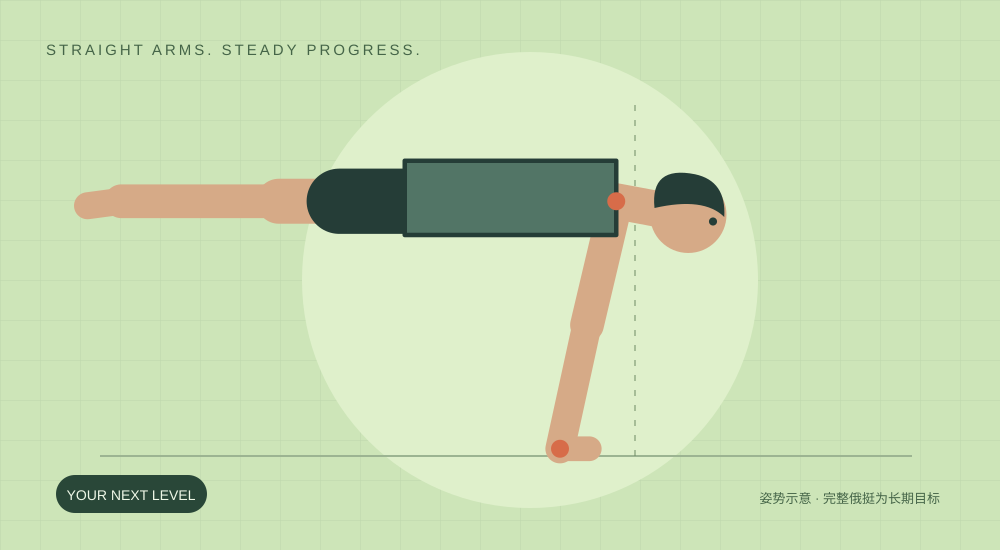

先撑稳，再离地。
30天一个完整训练周期
5练 / 周3天专项推力 · 2天轻辅助
3个阶段达标后手动进阶
00/ 30已完成的计划日
YOUR DAILY PRACTICE
今天，练好这一组。
↗
第1天先确定起点 热身后依次试冲肩8秒、辅助团身5秒。只有脚尖已能卸力时才试离地1–3秒。最多试3组，计入当天专项4组总量；组间休息2–3分钟。
先热身，再开始 每个训练日 · 按当日动作完成⌄
本机自动保存
ⓘ 只记录合格动作。每组俯卧撑留约2次余力；变形就结束。关节疼痛时停止对应动作，持续或反复疼痛需专业评估。
THE NEXT 30 DAYS
有训练，也有留白。
A 专项训练B 基础力量C / D 辅助训练每周2天恢复减量 / 复测
↗
每周5练2休：专项 → 下肢核心 → 推力 → 恢复 → 专项 → 轻辅助 → 恢复。第22天主动减量，第29天轻练，第30天复测。日历不会自动替你升级动作。
THE MOVEMENT LIBRARY
每个动作，看得明白。
EARN YOUR NEXT LEVEL
撑稳这一关，再向前。
不用等到固定日期。根据动作质量、完成量和次日恢复，手动选择当前阶段。以下门槛是本计划的执行规则。
01
一次只加一个变量
时间、次数、前倾幅度，选一项增加。专项全组完成且仍有约2秒余力，下次每组加1秒。
02
下一关先少量试做
尝试计入当天4组专项总量。新动作控制不住，就用原级别完成剩余组数。
03
升级由你确认
计时结束或勾选完成，都不等于动作达标。结合录像、余力和次日关节状态再决定。
ⓘ
30天用于建立和检验专项能力，完整并腿俄挺是后续长期目标。图鉴里的进阶团身仅供了解，默认不加入本周期处方。